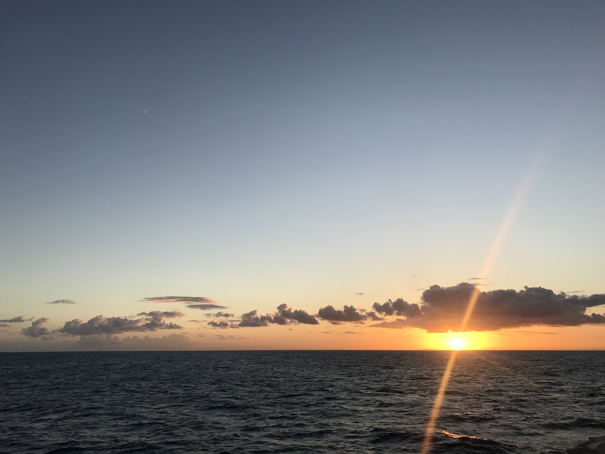
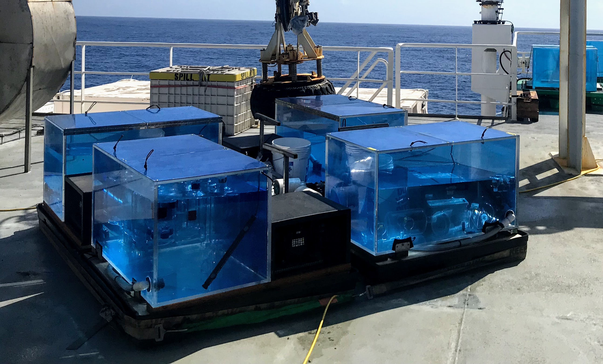

Research
My research focuses on understanding the important roles that microbes play in controlling the ocean biogeochemical cycles. I am broadly interested in how microorganisms adapt to their dynamic environments and how their activities cumulatively control the biological pump.
In my graduate work I approached this topic through metabolomics: measurements of small organic molecules that microbes use and produce. I think of these molecules as the currency of microbes - they can't talk to us or to one another, but we can trace their activity and interactions through the chemical exchanges they make and the signatures they leave behind. My dissertation research focused on studying surface microbial communities in the Pacific Ocean.
Microbial life in the surface ocean
Diel cycles
The major source of energy into the ocean is through light, which phytoplankton use to photosynthesize and provide organic carbon for the rest of the microbial community. The daily cycles of light and dark are thus fundamental controls on how the microbial community in the surface ocean operates.
As part of the SCOPE collaboration I was able to participate in a research cruise in 2015 that sampled the surface ocean north of Hawaii near Station ALOHA for many days in a row to study the daily lives of plankton in the surface oligotrophic ocean. I collected samples for particulate metabolites and have been able to identify oscillations in metabolites due to the behavior of the microbial community as a whole and to the individual needs of particular plankton groups.
This work informs how we think about the fluxes of energy as small, labile organic carbon compounds that are used and produced on daily time scales.
Nutrient limitation
I am interested in how microorganisms change their metabolism and adapt to nutrient limitation over short (hours) and long (evolutionary) time scales. I've studied nutrient limitation in natural communities by studying the metabolites used and made by surface microbial communities across the transition from the subtropical north Pacific, which is nitrogen limited, to the subarctic north Pacific, which is typically iron limited. This work is part of the Simons foundation SCOPE-Gradients project. As part of this work I've conducted nutrient amendment incubation experiments to test the nutrient limitation of the phytoplankton growth and the overall plasticity of the community.
In addition to artificial nutrient amendment experiments I was able to participate in a rapid response cruise in 2018 to sample seawater impacted by the eruption of Kīlauea on the island of Hawai'i. This was a 'natural' nutrient amendment that added metals and phosphorus to the typically oligotrophic ocean.
Method development
I am always interested in using chromatography and mass spectrometry tools to understand natural microbial communities and their biogeochemical impacts. As such I'm continually seeking to develop, improve, adapt, and implement analytical chemistry and statistical methods.
My Master's work focused on developing methods to do metabolomics analyses of marine samples. This involved liquid chromatography and mass spectrometry method adaptations and software development.